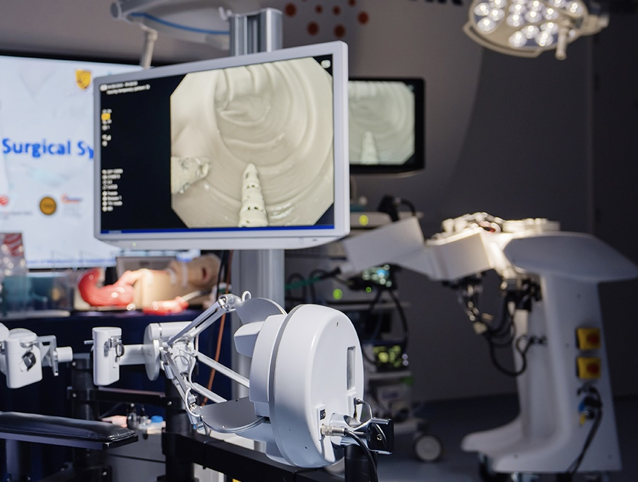
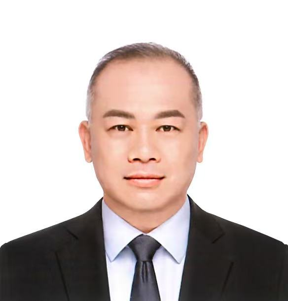

Hamlyn Golden Telescope Award
Geneva Inventions—Jury Gold, Gold & 2 Silvers
Red Dot Design Award
EndoR Surgical System
The Robotic Platform That
Makes ESD Accessible
— A dual-arm flexible endoscopic robot platform built to unlock the global ESD market.
Market Access
Endoscopic submucosal dissection (ESD) can target early gastrointestinal cancers and superficial lesions with curative intent — organ-preserving and without open surgery, and a key option when disease is still early-stage. In multicentre data on early gastric cancer, curative resection was achieved in ~90% of patients, with at least five years of follow-up and favourable gastric cancer–specific survival across age groups (Yoshikawa et al., Cancers 2022). An estimated 3.4 million new GI cancer cases arise each year (stomach, colorectum & esophagus combined).
Sources: Yoshikawa et al., Cancers 2022 (ESD outcomes); GLOBOCAN 2020 (incidence).
Market of GI Cancer
Early gastrointestinal cancers are often still superficial when detected—so screening and diagnostic endoscopy can find them early and many lesions can be removed endoscopically before deep invasion or spread.
Screening & therapeutic endoscopy literature
57% Mortality Drop
One-time endoscopic screening cuts upper GI cancer mortality by 57% (Pan et al. Gut 2021). Wider screening uptake and guideline-driven endoscopy volume increase early lesion detection — expanding clinical need for organ-sparing endoscopic resection, including ESD.
Pan et al. Gut 2021
US Push for ESD Reimbursement Code
CMS established dedicated hospital reimbursement (HCPCS C9779) for ESD in 2024, averaging USD 3,649 per case. USPSTF lowered screening age from 50 to 45 in 2021 — adding millions to the eligible population overnight.
USPSTF 2021 Final Recommendation & CMS 2024 Payment Policy
Milestones
Pioneering Endoluminal Robotics
Government funding awarded — endoluminal robotics programme launched at CUHK.
First prototype of dual-arm flexible endoscopic robotic system completed.
Multi-Scale Medical Robotics Center (MRC) Programme 1.1 — endoluminal robotics programme funded for 2020–2024.
7 provisional patents filed; additional patent applications ongoing.
Received the Karl-Storz Harold Hopkins Golden Telescope Award at The Hamlyn Symposium on Medical Robotics, Imperial College London (2023). Received the Gold Medal with Congratulations of the Jury, a Gold Medal, and 2 Silver Medals at the International Exhibition of Inventions of Geneva (2023).
Next-gen system unveiled and validated in live demonstration. View details.
Successful application for RAISe+ Stage II public–private financing. Clinical trial approved.
First-in-human clinical trial (target: mid-2026). CUHK Shenzhen Qianhai office inaugurated.
Strategy & Structure
Hong Kong Base, Greater Bay Area Reach
Corporate Structure
Hong Kong HQ · Shenzhen Qianhai
Headquartered in Hong Kong, with a Shenzhen Qianhai office to support Greater Bay Area clinical collaboration and regional supply-chain and manufacturing engagement. Corporate structure supports international investment and capital markets access.
GBA Advantage
Access to the World's Largest ESD Market
The Greater Bay Area is one of the world's largest integrated hubs for medical technology and advanced manufacturing. Direct access to mainland China's hospital network supports clinical collaboration and adoption at scale.
Policy & Funding
Hong Kong Innovation Support
The endoluminal robotics programme is supported by multi-year Hong Kong government research and innovation funding. RAISe+ Stage II programme financing totals HKD 76.2M — a HKD 36.2M government grant plus HKD 40M private co-investment — to accelerate first-in-human readiness and platform maturation.
World-Leading Surgeons & Engineers

CEO
Ir David Wong
Founding Team
Meet the Founders

Prof. Philip Chiu
Founding Chairman

Prof. Yeung Yam
Mechanical Engineering, Robotics & Automation

Dr. Hon Chi Yip
Clinical Specialist (Surgeon Endoscopist)

Dr. K.C. Lau
Robotics Engineer
Global KOL Clinical & Scientific Advisors
Scientific Advisory Board
World-leading surgeon endoscopists and procedural pioneers — among the highest-volume ESD operators globally.
Est. Combined Endoscopic Procedures
Lifetime aggregate across advisory board & founding chairman; includes ESD, POEM, EFTR & STER
Est. Combined Publications
Google Scholar / ResearchGate public profiles (April 2026)
Prof. Philip Chiu
Founding Chairman · Dean, Faculty of Medicine
The Chinese University of Hong Kong
Surgeon–endoscopist and pioneer of flexible robotic ESD — first in the world to perform the procedure. Led the world's first robotic gastric ESD (2011) and robotic colorectal ESD (2020); Principal Investigator of the world-first robotic colorectal ESD clinical trial (Chiu PW et al. Endoscopy, 2024).
Full profile & milestones
- Surgeon Endoscopist
- Dean, Faculty of Medicine, The Chinese University of Hong Kong
- Director, Multi-Scale Medical Robotics Center
- First in the world to perform flexible Robotic ESD
Clinical focus
- Upper Gastrointestinal Surgery
- Minimally Invasive and Robotic Surgery
- Endoscopic Surgery
- World's first robotic gastric ESD (2011)
- World's first robotic colorectal ESD (2020)
- Principal Investigator, world-first robotic colorectal ESD clinical trial (Chiu PW et al. Endoscopy, 2024) — full data on Platform
Awards & Honours
- Karl-Storz Harold Hopkins Golden Telescope Award, The Hamlyn Symposium on Medical Robotics, Imperial College London (2023)
- Honorary Member, European Association for Endoscopic Surgery and other Interventional Techniques (EAES) (2023)
- Gold Medal with Congratulations of the Jury, Gold Medal and 2 Silver Medals, International Exhibition of Inventions of Geneva (2023)
- International Honorary Member, Japan Society of Endoscopic Surgery (JSES) (2021)
- Outstanding Team Award (PWH Endoscopy), Hospital Authority, Hong Kong (2021)
- Bronze Medal, International Exhibition of Inventions of Geneva (2021)
- Spirit of Hong Kong Award on Innovation (2020)
- Gold Medal with Congratulations of the Jury, 47th International Exhibition of Inventions of Geneva (2019)
- JGH Emerging Leader Lectureship Award, Asia Pacific Digestive Week (2016)
- Global Chinese Outstanding Youth Award (2016)
- Outstanding Contribution Award, Chinese Society of Digestive Endoscopy (2015)
- Champion of the World Cup of Endoscopy, American Society for Gastrointestinal Endoscopy (2012)
- Higher Education Outstanding Scientific Research Output Award — Second-class Award in Technological Advancement, Ministry of Education of PRC (2011)
- Research Abstract awarded Best of Digestive Disease Week, United States (2011)
- State Scientific & Technological Progress Award, State Council of PRC (2007)

Dr. Joo Ha Hwang
Fortinet Founders Endowed Professor of Medicine
Stanford University School of Medicine
Chief, Division of Gastroenterology & Hepatology at Stanford; Fortinet Founders Endowed Professor. Leads the GAstric Precancerous conditions Study (GAPS) and focuses on early GI cancer detection and advanced therapeutic endoscopy (including POEM, ESD & EFTR).

Prof. Haruhiro Inoue
Director, Digestive Disease Centre
Showa University Koto-Toyosu Hospital, Tokyo
Pioneer of POEM — performed the world's first clinical POEM (2008). Director, Digestive Disease Centre at Showa University; former President of the Japan Gastroenterological Endoscopy Society. Crystal Award, ASGE (2006 & 2013); George Berci Lifetime Achievement Award, SAGES (2022).
Dr. D. Nageshwar Reddy
Chairman & Chief of Gastroenterology
Asian Institute of Gastroenterology, Hyderabad, India
Chairman, Asian Institute of Gastroenterology (AIG), Hyderabad; Past President of the World Endoscopy Organization. Recipient of the Padma Vibhushan 2025 — India's second-highest civilian honour — recognised for landmark contributions to therapeutic GI endoscopy.
Dr. Christopher C. Thompson
Professor of Medicine, Harvard Medical School
Brigham and Women’s Hospital, Boston, MA
Pioneer in foregut & bariatric endoscopy — developed TORe and performed first-in-human endoscopic sleeve gastroplasty (ESG) cases. Director of Endoscopy & Therapeutic Endoscopy at Brigham and Women’s Hospital and PI of the Developmental Endoscopy Laboratory, advancing novel endoscopic platforms into clinical practice.

Prof. Pinghong Zhou
Chief, Endoscopy Center · Vice President, CSDE
Zhongshan Hospital, Fudan University, Shanghai
Director of the Endoscopy Center at Zhongshan Hospital, Fudan University; a pioneer in advanced endoscopic surgery in China, including ESD, EFTR and POEM. Co-developed STER (submucosal tunneling endoscopic resection) and is recognised internationally for high-volume complex endoluminal procedures.
* Chairman publication and citation data sourced from Google Scholar (April 2026). Publication and citation data for advisors sourced from Google Scholar and ResearchGate public profiles (April 2026). ESD procedure estimates are lifetime aggregates based on publicly reported figures.